1 xícara e meia (chá) de Leite Líquido NINHO® Forti+ Integral
1 colher (sopa) de suco de limão
1 xícara (chá) de manteiga sem sal em temperatura ambiente
1 xícara e meia (chá) de açúcar
3 ovos
3 ovos
1 colher (sopa) de essência de baunilha
1 xícara e meia (chá) de farinha de trigo
1 colher (sopa) de Chocolate em Pó 50% NESTLÉ® DOIS FRADES
1 colher e meia (sopa) de fermento em pó
1 colher (chá) de corante líquido vermelho
Recheio e Cobertura
2 xícaras (chá) de cream cheese (450 g)
meia xícara (chá) de manteiga sem sal em temperatura ambiente
meia xícara (chá) de manteiga sem sal em temperatura ambiente
meia xícara (chá) de manteiga sem sal em temperatura ambiente
Modo de Preparo
Massa
Em um recipiente, misture o Leite NINHO com o suco de limão. Reserve até talhar..
Em uma batedeira, bata a manteiga com o açúcar até obter uma mistura esbranquiçada.
Com a batedeira ligada, adicione os ovos, um a um. Acrescente a baunilha e bata.
Em um recipiente, peneire a farinha de trigo, o Chocolate em Pó NESTLÉ e o fermento.
Com a batedeira ligada em velocidade baixa, vá intercalando a adição do leite com o suco de limão e dos ingredientes secos peneirados.
Adicione o corante e misture bem. A cor da massa deve ficar bem vermelha, se necessário, adicione mais corante.
Despeje a mistura em três formas redondas (20 cm de diâmetro) forrada com papel manteiga no fundo e laterais e leve para assar em forno médio (180°C) preaquecido, por cerca de 50 minutos.
Recheio e Cobertura
Em uma batedeira, bata o cream cheese com a manteiga até obter um creme bem liso.
Adicione a essência de baunilha e bata.
Adicione o açúcar de confeiteiro e bata bem. Reserve em geladeira.
Montagem
Com a Massa já fria, corte-a no sentido horizontal em 3 partes.
Utilize a própria forma que assou o bolo para fazer a montagem. Coloque uma das partes da massa e coloque uma camada de Recheio. Coloque a outra massa e mais um pouco de recheio, finalizando com a última massa. Leve ao freezer por cerca de 1 hora.
Desenforme o bolo e cubra com a Cobertura. Utilize os próprios farelos do bolo e frutas vermelhas para a decoração..


 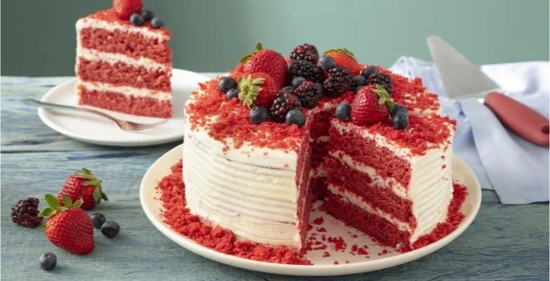
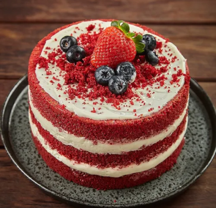
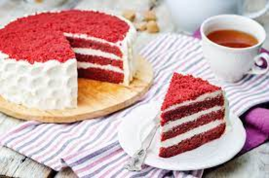
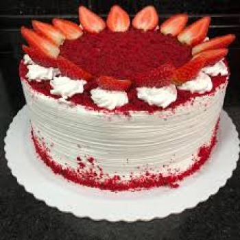
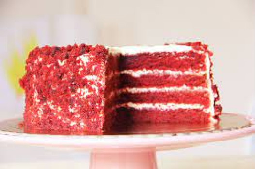
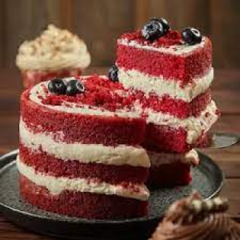
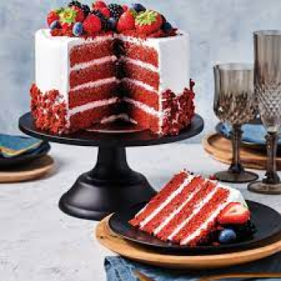
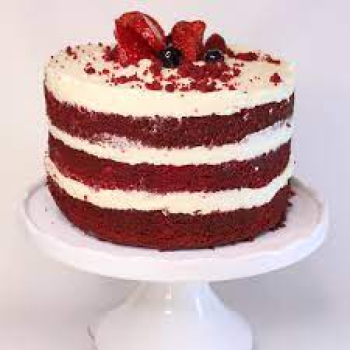
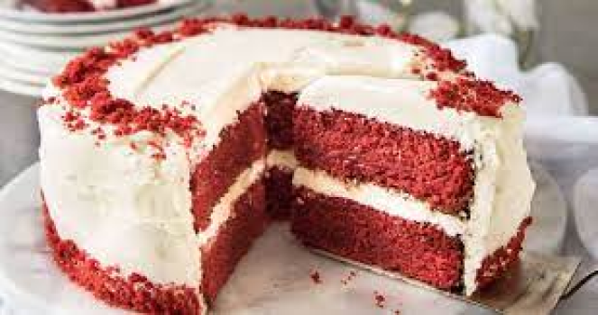
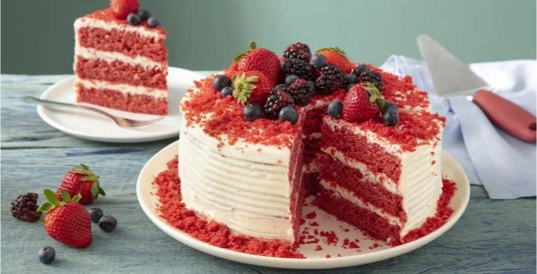
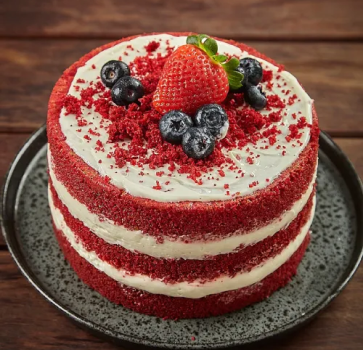
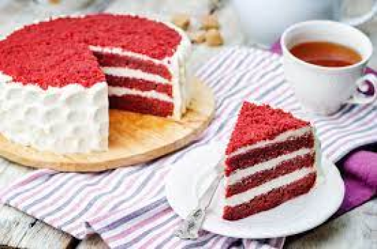
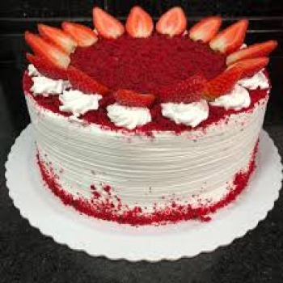
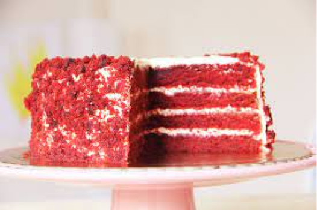
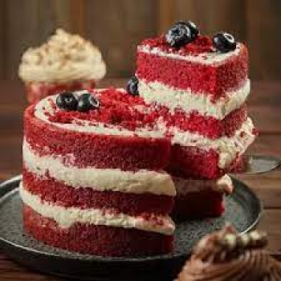
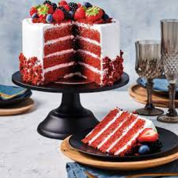
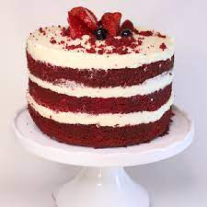
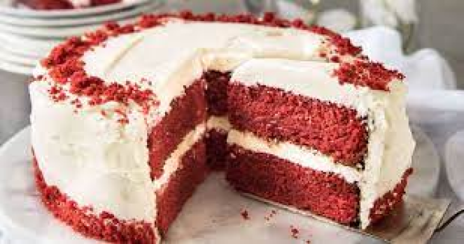
{kind=link}
{kind=link}
{kind=link}
{kind=link}
{kind=link}
{kind=link}
{kind=link}
{kind=link}
{kind=link}